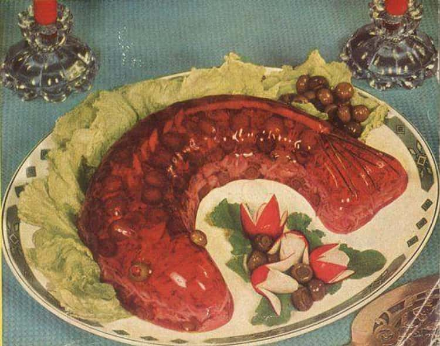

Glace Fish Mold

What to expect
A lovely combination of flaked fish, served inside a jelly mold, of a fish.
Complementing the dish are a combination of cucumber, green peppers and onions, all encapsulated within the mold!
Ingredients
- Half cup of Cold water
- Plain Gelatin
- 1 cup of Boiling water
- 2 tablespoons of sugar
- Half teaspoon of salt
- 3 tablespoons of lemon juice
- 1 cup flaked fish
- Quarter cup of dices green peppers
- Half unpeeled cucumber, cut
- 1 small onion, sliced
- Half chopped pimiento
- Quarter cup sliced celery
Steps
- Soften gelatine in cold water, dissolve in boiling water.
- Add sugar, salt and lemon juice. Cool.
- When mixture begins to thicken, fold in fish, green pepper, cucumber wedges, onion rings, pimiento and celery.
- Pour into 1 quart mold, rinsed in cold water.
- When firm, unmold, garnish as desired, we recommend oysters, and serve with bowl of mayonnaise.
Recipe Home